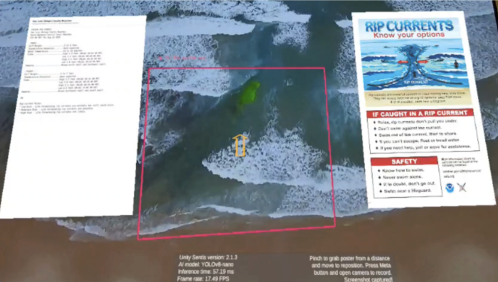

RipFinder
Posted: 2025-06-25
RipFinder is a Unity-based AR app that detects rip currents in real time using YOLOv8 models. It highlights dangerous water zones through live camera feed overlays, helping improve beach safety. The model achieved around 91% precision in detecting hazardous areas.